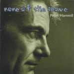

Home Artist links Label link

| Artist: | Peter Hammill |
| Title: | None Of The Above |
| Label: | Fie FIE 9122 |
| Length(s): | 44 minutes |
| Year(s) of release: | 2000 |
| Month of review: | 06/2000 |
Line up
Peter Hammill - all except
Stuart Gordon - violin and viola on 2,5 and 8
Manny Elias - drums and percussion on 6
Holly and Beatrice Hammill - soprano on 2 and 8
Tracks
| 1) | Touch And Go | 4.09
|
| 2) | Naming The Rose | 5.20
|
| 3) | How Far I Fell | 5.57
|
| 4) | Somebody Bad Enough | 4.05
|
| 5) | Tango For One | 6.45
|
| 6) | Like Veronica | 5.56
|
| 7) | In A Bottle | 8.02
|
| 8) | Astart | 4.16
|
Summary
According to the bio one in the style of Fireships and Everyone You Hold.
The music
Touch And Go is the first of the eight tracks. A bit of an eerie atmosphere
here, but the song itself it quite romantic and is in fact very much in the
style of Fireships and Everyone You Hold. The instrumentation is mostly
piano and keyboards, but there are also some reversed sounding
keyboards/guitars here. The vocals are doubled at times with Hammill singing
both high and low (generally low, but also higher during the "chorus").
The sadness of Naming The Rose comes close to that of Sylvia and Tommy
in Curtains. The music is a bit different though, being more close to a chamber
orchestra with the violin/viola of Stuart Gordon and also the vocals of two
of Hammills daughters. The interlude is a bit tone poem like similar, but
shorter than on The Light Continent from This.
How Far I Fell opens a capella with acoustic guitar and again those eerie
soundscape like sounds continuing. I'm reminded here of the way Hammill
performs Modern these days, a strumming guitar and not so loud. The vocal
part can be quite complex with lots of little Hammills singing, a bit like
the singing of the House in the House Of Usher.
Somebody Bad Enough opens somberly but also in a rather relaxed way.
Prominent bass playing here with mostly piano, a bit of organ and something
similar to guitar in the back. This song about stalking and obsession
is tango like rhythm wise and gets to be quite chaotic before the final
vocal part. I don't like the chorus that much however. The opening of
Tango For One is promising. A very good vocal melodies carries the song,
the violin and piano give the music a darkish, gipsy/balkan atmosphere.
Like Veronica has many of the ingredients of a song such as How Far I Fell.
What strikes me most here is the hazy guitar playing and the first turn for
rock. In A Bottle opens with loud guitar chords and this might in fact be
the counterpart of Everyone You Hold's Bubble. However for the vocal part
we first take some gas back. Relaxed percussion and at least three types
of vocals make up the bulk of the song. An a capella passage then comes in
featuring lots of intertwined vocals. The opening promised a bit more than
I got, but that's my tastes I guess. Astart is a melancholic piece, a bit too
melodic and melodramatic for my tastes.
Writing this the day before Ascension Day it strikes me that every page has
a different kind of stairs/steps on it.
Conclusion
Relaxed music, but usually with an egde, often about obsession and varying
between romantic pieces, slightly classical pieces, but usually quite sparse.
Vocally Hammill takes it easy although the album does have its complex
harmonies. Although the music has the tendency to grow on one, I prefer the
previous album This very much over this one. Best track is Tango For One.
© Jurriaan Hage